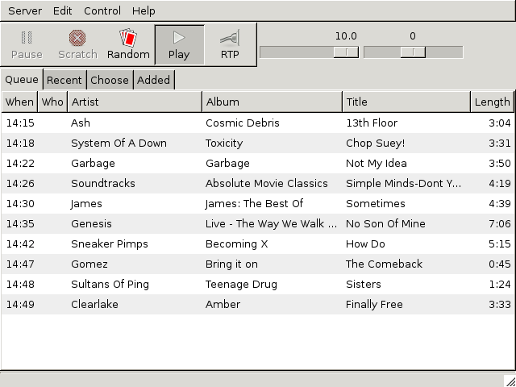
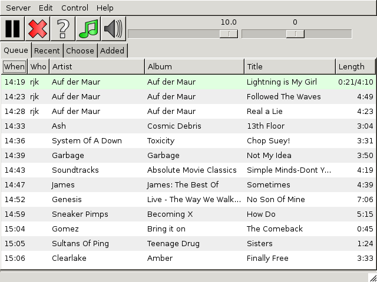
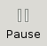
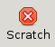
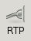
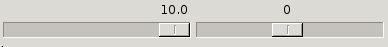
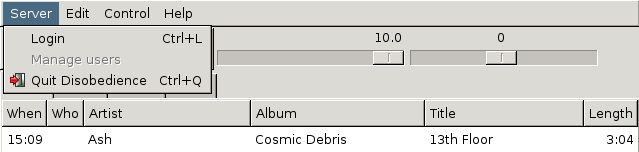
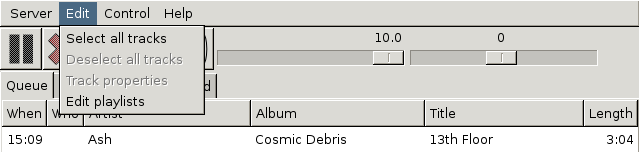
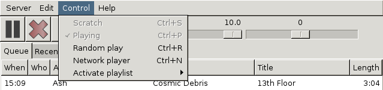
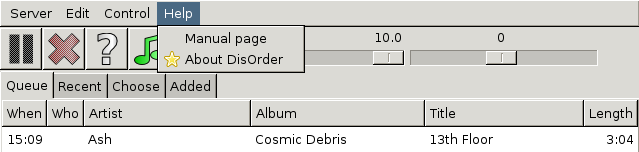

This chapter contains a tour of the main Disobedience window.
Disobedience should look something like this when you've started it up and logged in:

At the top is the menu bar, and immediately below it a toolbar with some buttons and a volume control. (In some cases the volume control may be absent.) Below that is a row of tabs: Queue, Recent and so on. The Queue tab is selected: this displays the currently playing track and the list of tracks that will play in the near future.
In this example nothing is actually playing. (Apart from the fact that you wouldn't hear anything) you can tell this because the top row only has a single length indicator (“3:04”). If it was playing it would show how far through the track it was too. Secondly, all the tracks were chosen at random. You can tell this because the Who column is empty.
In the screenshot below both of these things have changed. Use rjk has selected some tracks and the first of them is playing.

The playing track is highlighted with a green backgroud. It's 4 minutes and 10 seconds long and so far, the first 21 seconds of it has played.
The meaning of the buttons is as follows:
|  | The pause button. This only effective when a track is playing. When it is pressed the playing track is paused. |
|  | The scratch button. As above this is only effective when a track is playing. Pressing it will stop that track playing and move onto the next one. |
| The random play button. Random play, which is enabled when the button is depressed, means that if nothing is playing the server will automatically pick a track at random and play that. Furthermore it will ensure that the queue always has a minimum number of tracks, so you can see ahead of time what will play next. | |
| The playing button. Normally this would always be left enabled, i.e. with the button depressed. If it is disabled then nothing will be played at all, regardless of whether it was randomly chosen or picked by a human. | |
|  | The network play button. This is only effective if the server is playing over the network (as opposed to using a local sound card). When network play is enabled, Disobedience runs a client program on your computer to play sound received over the network using your sound card. |
To the right of the buttons are two sliders:

The left hand slider is the volume control. This ranges from 0 (silent) to 10 (loudest). The right hand slider is the balance control, which ranges form -1.0 (left) to +1.0 (right).

The Server menu is loosely analogous to the File menu in othe applications. It has no file-related options though, so the name would not be appropriate! Instead the three options it has are Login, which brings back the login window shown the first time it is run, Manage Users which allows adminstrators to do user management, and Quit.

The Edit menu has options to select or deselect all tracks. You can also do this with CTRL-A and CTRL-SHIFT-A, and of course you can select tracks in the queue (or other tabs) with the mouse.
The Track Properties option will create a window with editable properties of each selected track and the Edit Playlists option will create a window allowing editing of playlists.

The Control menu options are mostly equivalent to the buttons described above. The exceptions is Activate Playlist which allows you to play a playlist, and Compact Mode which switches Disobedience's window to a smaller format.

The Help menu has an option to bring up the Disobedience manual and an About option which will display a bit of version information for the server and for Disobedience (which might not be the same).